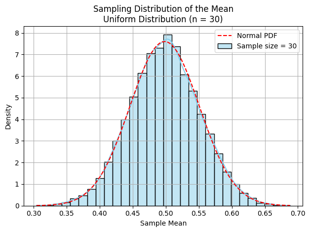

Problem 1
Exploring the Central Limit Theorem through Simulations
Motivation
The Central Limit Theorem (CLT) is a foundational principle in statistics. It asserts that the distribution of sample means approaches a normal distribution as the sample size increases, regardless of the original distribution's shape. This property has profound implications in statistics and real-world applications. Through simulation, we can vividly observe the CLT in action, enhancing both understanding and intuition.
1. Simulating Sampling Distributions
To explore the CLT, we simulate sampling distributions using the following population distributions:
-
Uniform Distribution: A distribution where every value within a specified range is equally likely. Its probability density function (PDF) is constant within the interval.
-
Exponential Distribution: A continuous probability distribution commonly used to model time between events in a Poisson process. It is defined by the formula:
$$ f(x; \lambda) = \lambda e^{-\lambda x}, \quad x \geq 0 $$ - Binomial Distribution: A discrete distribution that represents the number of successes in a fixed number of independent Bernoulli trials with the same probability of success:
We generate a large synthetic population (e.g., 100,000 samples) for each distribution:
2. Sampling and Visualization
Sample Mean
The sample mean is the average of a sample:
The sample mean is defined as:
Sampling Distribution
The sampling distribution of the sample mean is the probability distribution of all possible means from samples of a given size from the population.
import numpy as np
import matplotlib.pyplot as plt
import seaborn as sns
from scipy.stats import norm
# Set the random seed for reproducibility
np.random.seed(0)
# ----------------------------
# 1. Generate Populations
# ----------------------------
# Uniform Distribution: U(0, 1)
pop_uniform = np.random.uniform(0, 1, 100000)
# Exponential Distribution: λ = 1
pop_exponential = np.random.exponential(scale=1.0, size=100000)
# Binomial Distribution: n = 10, p = 0.5
pop_binomial = np.random.binomial(n=10, p=0.5, size=100000)
# ----------------------------
# 2. Sampling and Visualization Function
# ----------------------------
def plot_sampling_distribution(population, sample_sizes, dist_name):
"""
Plots the sampling distribution of the mean for various sample sizes.
"""
for n in sample_sizes:
# Generate 10,000 sample means
sample_means = [np.mean(np.random.choice(population, size=n, replace=False)) for _ in range(10000)]
# Plot histogram
sns.histplot(sample_means, kde=True, stat="density", bins=30, color="skyblue", label=f"Sample size = {n}")
# Overlay normal curve
mu, sigma = np.mean(sample_means), np.std(sample_means)
x = np.linspace(min(sample_means), max(sample_means), 100)
plt.plot(x, norm.pdf(x, mu, sigma), 'r--', label="Normal PDF")
# Labels and title
plt.title(f"Sampling Distribution of the Mean\n{dist_name} Distribution (n = {n})")
plt.xlabel("Sample Mean")
plt.ylabel("Density")
plt.legend()
plt.grid(True)
plt.tight_layout()
plt.show()
# ----------------------------
# 3. Run Simulations
# ----------------------------
sample_sizes = [5, 10, 30, 50]
plot_sampling_distribution(pop_uniform, sample_sizes, "Uniform")
plot_sampling_distribution(pop_exponential, sample_sizes, "Exponential")
plot_sampling_distribution(pop_binomial, sample_sizes, "Binomial")


Run the plots for different sample sizes. As the sample size increases, the sampling distribution becomes more bell-shaped and symmetric, illustrating convergence to normality.
3. Parameter Exploration
We examine how:
The shape of the original distribution affects the speed of convergence.
The sample size influences the accuracy and spread of the sample mean.
The variance of the population affects the spread of the sampling distribution.
Variance
The variance of the population (\(\sigma^2\)) measures the dispersion from the mean. The variance of the sampling distribution of the mean is:
Expectations
The more skewed the original distribution, the larger the sample size needed for convergence.
Uniform distributions converge more rapidly than exponential ones.
4. Practical Applications
Understanding the CLT is essential in fields such as:
Statistics: Confidence intervals and hypothesis testing rely on CLT.
Manufacturing: Used in quality control to assess process stability.
Finance: CLT helps model and assess risk using aggregated returns.
Medical Trials: Helps ensure reliability of results from sampled patient data.
Deliverables
A Python script or notebook with simulations using NumPy, Matplotlib, and Seaborn.
Plots illustrating sampling distributions from different population types.
Mathematical definitions embedded next to each plot and concept.
A Markdown discussion relating simulation results to theoretical expectations.
Code Hints
Use numpy.random to generate populations and samples.
Plot with seaborn.histplot() and overlay a normal curve using scipy.stats.norm.pdf.
Use np.random.seed() for reproducibility.
Conclusion
The Central Limit Theorem, though abstract in theory, becomes intuitive through computational experiments. Simulations show that regardless of the population’s distribution, the mean of sufficiently large samples tends to be normally distributed. This underpins much of statistical inference, from confidence intervals to decision-making models. Each plot is supported by mathematical definitions to reinforce learning and interpretation.